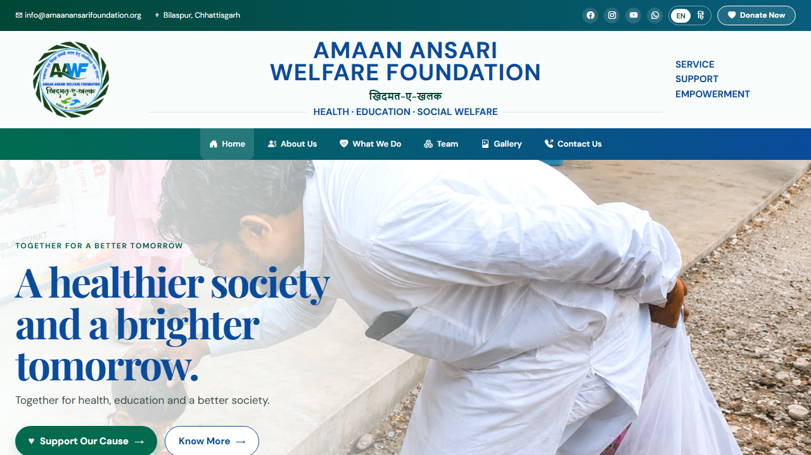
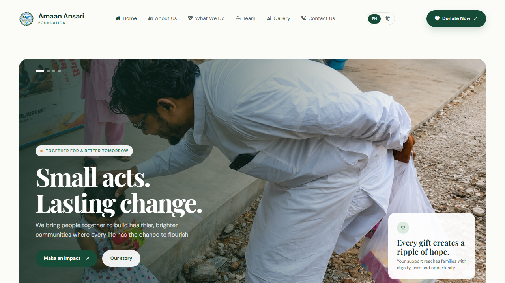
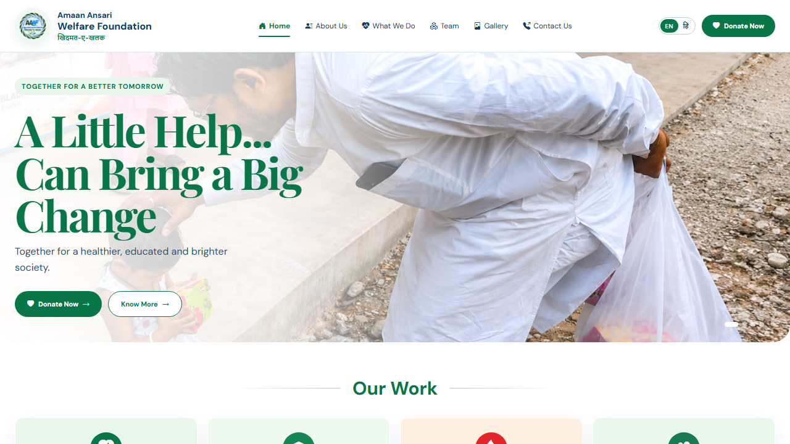
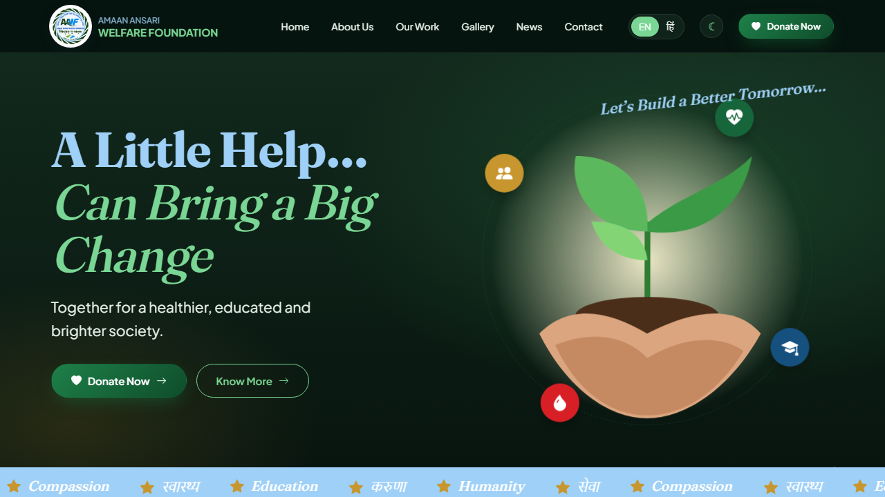

01Classic Green & Blue
A warm, expressive foundation homepage with strong storytelling, colorful program cards, and a prominent mission-led hero.
Explore the complete website directions below. Open any theme to view the full experience, then choose the visual language that best represents the foundation.

01A warm, expressive foundation homepage with strong storytelling, colorful program cards, and a prominent mission-led hero.

02A calm, premium layout that puts people and photography first, with generous spacing and a confident visual rhythm.

03A clear, efficient direction for visitors who need to understand the mission, impact, and ways to help at a glance.

04A friendly, modern presentation with an approachable tone, compact navigation, and quick paths to participate.